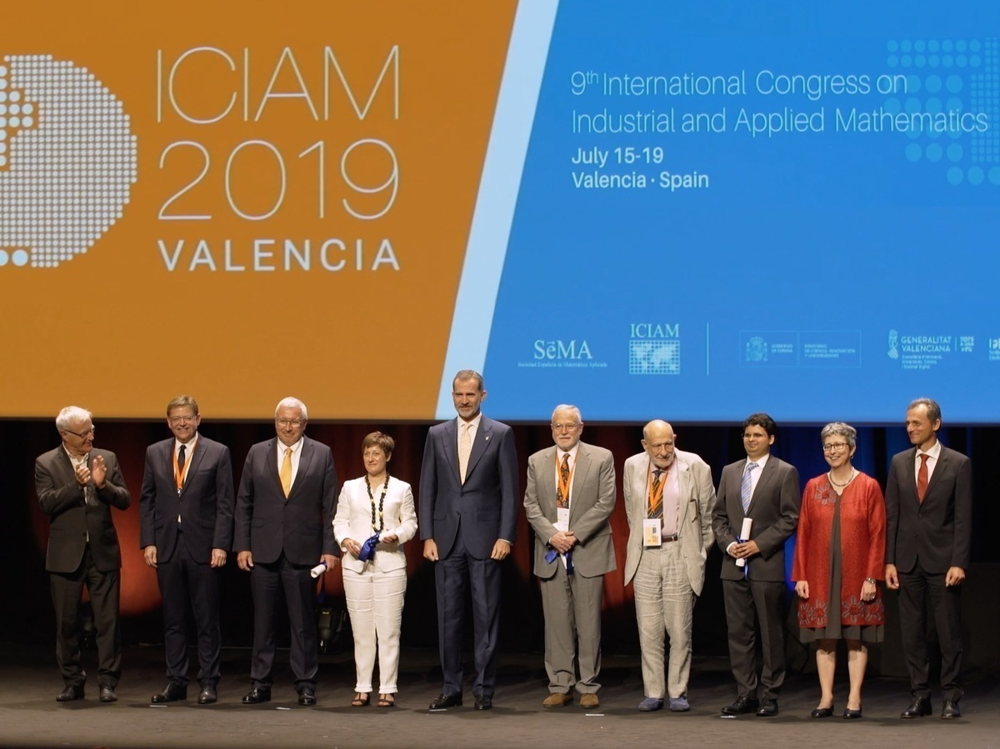

| B oletín electrónico de la SEMA |
| Número 23, octubre 2019 |

| Boletín electrónico de la SEMA – Número 23, octubre 2019 | |
| ISSN 2659-4129 | |
| © | Sociedad Española de Matemática Aplicada – SEMA |
| © | De los autores |
| https://www.sema.org.es/ |
Diseño de la portada: FOG.
Ceremonia de apertura del ICIAM 2019, Palacio de Congresos de Valencia, celebrada el 15 de julio de 2019. Los cinco galardonados con un premio ICIAM 2019 posan junto a S. M. Felipe VI, la presidenta de la ICIAM, el ministro de Ciencia, Innovación y Universidades, el presidente de la Generalitat Valenciana y el alcalde de Valencia (más detalles en la descripción de la figura ??). Imagen: Organización ICIAM 2019.